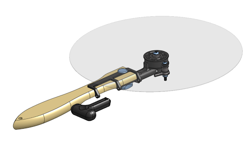

The Roto-Peel is a mechanical kitchen tool designed to improve heat uniformity when baking pizza by enabling controlled rotation inside an oven. The system combines a traditional pizza peel with a cable-driven rotational mechanism, allowing the user to rotate the pizza without repeatedly repositioning it manually.
Conventional oven cooking results in uneven heating due to spatial temperature gradients and convection flow patterns. This is especially noticeable in pizza baking, where one side cooks faster than the other. Existing solutions are either difficult to control, messy, or expensive.
We developed a hybrid pizza peel and turntable system that allows controlled rotation using a pull-cable mechanism. The user can lift a pizza and rotate it smoothly inside the oven without removing it or manually shuffling its position.
The final design uses a cable-based actuation system instead of a crank mechanism to reduce geometric constraints and interference. Pulling the cable generates an offset torque that rotates the peel surface about a central bearing.
The prototype was fabricated using a combination of machining (steel/aluminum components), 3D printing (PLA prototypes), and off-the-shelf hardware including bearings, bolts, and cable systems.
The prototype successfully demonstrated controlled pizza rotation inside a constrained environment. The mechanism was capable of smoothly lifting and rotating the pizza with manageable cable force input.
The Roto-Peel demonstrates a functional proof-of-concept for improving home pizza cooking through controlled mechanical rotation. While the prototype validated the core idea, future iterations will focus on improving durability, manufacturability, and thermal resistance for real-world kitchen use.